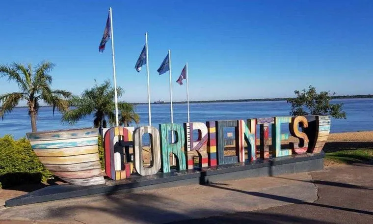
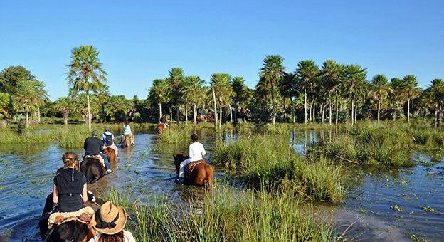

La Ciudad de Corrientes fue fundada por el Adelantado Juan Torres de Vera y Aragón con el auxilio de Alonso de Vera y Aragón, llamado el Tupí, y Hernando Arias de Saavedra;Hernandarias; el 3 de Abril de 1588. El nombre original de la ciudad, en 1588, fue de "Ciudad de Vera de las Siete Corrientes", al que, un siglo después, se le agregó San Juan que fue uno de los santos escogidos por los fundadores para proteger a la ciudad, que finalmente se transformó en el apócope Corrientes.
Limita con el rio de Parana. Forma parte de la Mesopotamia argentina. Se caracteriza por una asimetria marcada entre el sector oriental y el occidental. El origen geológico de la zona no resulta claro. Las hipótesis más convincentes sugieren que la cuenca del Iberá estaría constituida por el antiguo cauce del río Paraná, del cual se desvió una vez la erosión hizo practicable el flujo a través del banco rocoso de los saltos de Yacyretá-Apipé. Avala esta teoría el origen aluvionario del suelo, compuesto por capas de arena y limo sobre un fondo impermeable de arcilla que impide el drenaje directo de las aguas. La circulación de las mismas se produce a través de los ríos Corriente y Miriñay, hacia las cuencas del Paraná y el Uruguay respectivamente. Las lluvias frecuentes, sobre todo durante la primavera y el otoño, reponen el nivel de los esteros, que no ha mostrado tendencias a la modificación en los últimos años.

Una figura señera de la Cultura Correntina fue " Osvaldo Sosa Cordero " (1906-1986), designado en 1952 como el Primer Director de Cultura de la Provincia de Corrientes, escritor de libros como el Romancero Guaraní con el cual obtuvo el Premio Baldomero Fernández Moreno otorgado por la SADE, compositor y autor de más de 250 temas entre los que se destacan "Anahí", "Alma Guaraní", "Camba cuá" (1925), "Naranjerita", "Poncho Celeste Vincha Punzó", "Mi Provincia Guaraní" etc. Tangos como "Ahí va el dulce" , "Para Corrientes", Candómbes y Marchas de Carnaval como "Capital del Carnaval", "Copacabana", "Ara Berá" y 52 más. Fue también el autor de las tres únicas danzas existentes en la Provincia y sus coreografías como son "El Milagro" (Que relata el Milagro de la Cruz) , "El encadenado" ( Un valseado tradicional) y la recopilación histórica del "Mainumbuj" (rescatando una antiquísima danza correntina cuyos bailarines imitan los movimientos del picaflor (Colibrí). Fue también Caricaturista y autor de innumerables publicaciones. Recibió el primer premio Konex otorgado a un correntino por Folklore. Antes de su muerte recibió los más importantes Premios de la Provincia, como el "Guaraní". Corrientes posee además, como rasgo característico, una acendrada cultura conservadora asentada en un componente mágico, venido tanto de su cultura criolla típicista, rural y mestiza de raigambre territorial guaraní.

En toda la pronvincia de Corrientes el clima es subtropical sin estacion seca. Los verenos son muy sofocantes, puede llegar hasta los 46º C, mientras tanto los inviernos suelen ser templados-frios, entre 7º y 20º C aunque a veces puede llegar a temperaturas de 1º C. La ganaderia suele ser dificil debido a las altas temperaturas y las pasturas relativamente pobres, sobre todo en la region del Norte. Por estas razones el brangus es el ganado de predomina. En cambio la agricultura se encuentra mas desarrollada y es uno de los pilares de su economia, predomina los cultivos de citricos, tabaco, arroz, yerba mate, te y algodon. Tabien es una de las provincias del pais con mas deforestacion.
El atractivo turístico de la provincia se basa, principalmente, en su variada riqueza forestal, sus esteros, montes y playas; además de su estilo arquitectónico colonial y autóctono, principalmente de su capital provincial, además de otros centros históricos en general. También cuenta con importantes eventos culturales entre los que destacan el Festival Nacional del Chamamé y los carnavales.

La Basílica de Itatí en la localidad homónima es uno de los principales centros de peregrinación católica en la Argentina. Las capillas de Santa Ana y Santa Lucía son templos de valor histórico. Otro centro de peregrinación es Mercedes, en el santuario dedicado al Gauchito Gil cerca del lugar de su muerte. El culto a su figura es uno de los que mayor atracción ejerce por fuera de la religión católica, atrayendo en 2019 a más de 200 000 personas en el aniversario de su fallecimiento.